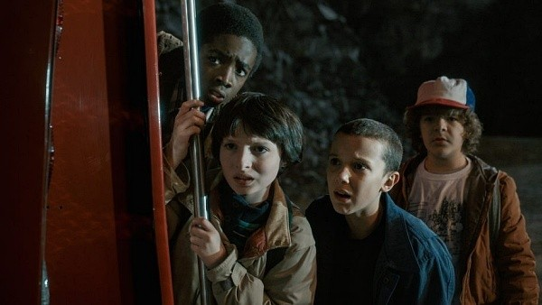

A História de Stranger Things
Stranger Things se passa na década de 1980, na pequena cidade de Hawkins, onde acontecimentos estranhos começam a assustar os moradores. Tudo muda quando Will Byers desaparece misteriosamente sem deixar pistas. Enquanto a polícia e sua família tentam encontrá-lo, seus melhores amigos iniciam uma investigação por conta própria e acabam conhecendo Eleven, uma garota misteriosa que fugiu de um laboratório secreto do governo. Ela possui habilidades psicocinéticas, sendo capaz de mover objetos com a mente e acessar dimensões desconhecidas.

Aos poucos, eles descobrem a existência do Mundo Invertido, uma dimensão paralela sombria, perigosa e tomada por criaturas aterrorizantes. Esse lugar é uma versão corrompida do mundo real, coberta por escuridão, névoa e organismos estranhos. A conexão entre o desaparecimento de Will, os experimentos realizados no laboratório de Hawkins e o surgimento do Mundo Invertido revela segredos muito maiores do que todos imaginavam. Unidos pela amizade, coragem e determinação, o grupo enfrenta monstros, ameaças sobrenaturais e conspirações governamentais para tentar salvar sua cidade.